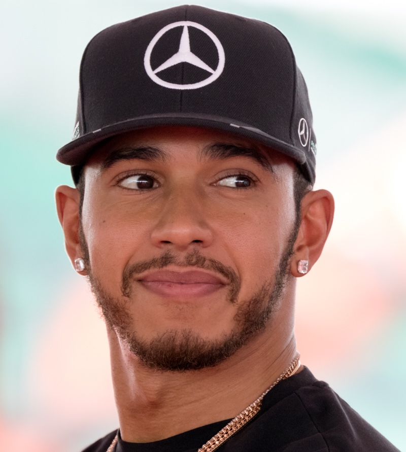
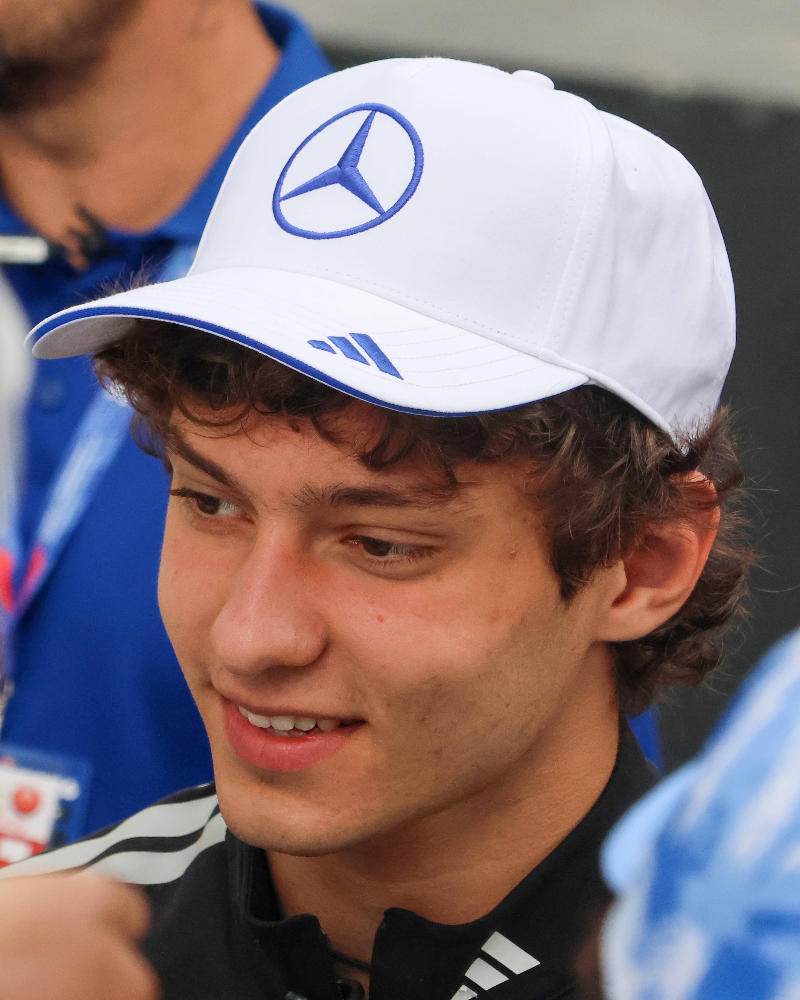

Da grande fan della Formula 1 ho deciso di cogliere l'occasione per realizzare un piccolo sito sul team Mercedes AMG Petronas.
Da grande fan della Formula 1 ho deciso di cogliere l'occasione per realizzare un piccolo sito sul team Mercedes AMG Petronas.
In questi pochi paragrafi cercherò di riassumere la storia del team partendo dalla sua nascita fino ad arrivare ai giorni d'oggi. Dedicheremo inoltre un paragrafo intero alla stagione 2026 (ancora in corso) perchè segnata da diversi traguardi importanti per la scuderia. Inoltre, in fondo a questa pagina ci sono due foto che, cliccandoci sopra, portano su due pagine separate su due grandi piloti del team, uno passato e l'altro presente:
La Mercedes-AMG Petronas Formula One Team è una delle scuderie più importanti e vincenti nella storia della Formula 1.
La prima partecipazione al campionato risale al lontano 1954, col pilota argentino Juan Manuel Fangio che li porterà a vincere due titoli mondiali consecutivi nel 1954 e 1955. Nonostante le due vittorie, al termine della stagione del '55 la Mercedes si ritirò dalle competizioni automobilistiche, tornando in Formula 1 appena nel '93 solo però come costruttrice di motori per case come Sauber e McLaren. Nel 2010, dopo aver acquistato la scuderia Brawn GP, campione del mondo nel 2009 con Jenson Button, e in seguito ad un accordo da 60 milioni di dollari con l'azienda Petronas, nasce la nuova scuderia "Mercedes GP Petronas F1 Team". Con l'arrivo di piloti come Nico Rosberg e, soprattutto, Lewis Hamilton, il team iniziò una nuova era di successi. Dal 2014 al 2021, Mercedes dominò il campionato, conquistando otto titoli costruttori consecutivi e sette titoli piloti, sei dei quali con Hamilton e uno con Rosberg. Negli anni successivi, però, la squadra ha dovuto affrontare una concorrenza più forte, in particolare da parte di Red Bull, con il giovane Max Verstappen che infatti nel 2022 conquisterà il suo primo titolo togliendolo a Lewis Hamilton.
Negli anni più recenti, Mercedes ha puntato su una nuova generazione di piloti, tra cui George Russell e il giovane italiano Kimi Antonelli, con l'obiettivo di tornare stabilmente a lottare per il titolo mondiale.
Per quanto riguarda la stagione 2026, Mercedes è tornata a essere una delle grandi protagoniste della Formula 1, grazie soprattutto alle prestazioni del giovane Kimi Antonelli e del compagno George Russell.
Dopo 17 Gran Premi disputati, la scuderia si trova al primo posto nel Campionato Costruttori con 578 punti, davanti a Ferrari e Red Bull, mentre Antonelli guida la classifica piloti con 340 punti (che potrebbe diventare il più giovane campione del mondo nella storia della Formula 1) seguito dal compagno di squadra Russell, secondo con 238 punti. Tra i risultati più importanti della stagione ci sono le vittorie di Russell in Australia e quelle di Antonelli in Cina, Giappone, Miami, Canada, Italia e in altri appuntamenti del campionato.
Questi risultati dimostrano il ritorno di Mercedes e la superiorità non solo dei piloti ma anche degli ingegneri che hanno costruito una macchina che al giorno d'oggi sembra imbattibile. La Mercedes è tornata ai vertici della categoria e diventa sempre più concreta la possibilità di conquistare nuovi titoli mondiali piloti e costruttori anche nelle stagioni successive.
Cliccando su ognuna delle due foto si può accedere a due siti con le informazioni principali su due grandi piloti:

